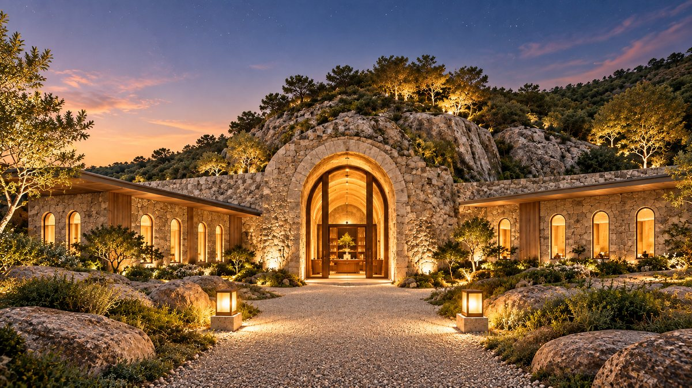
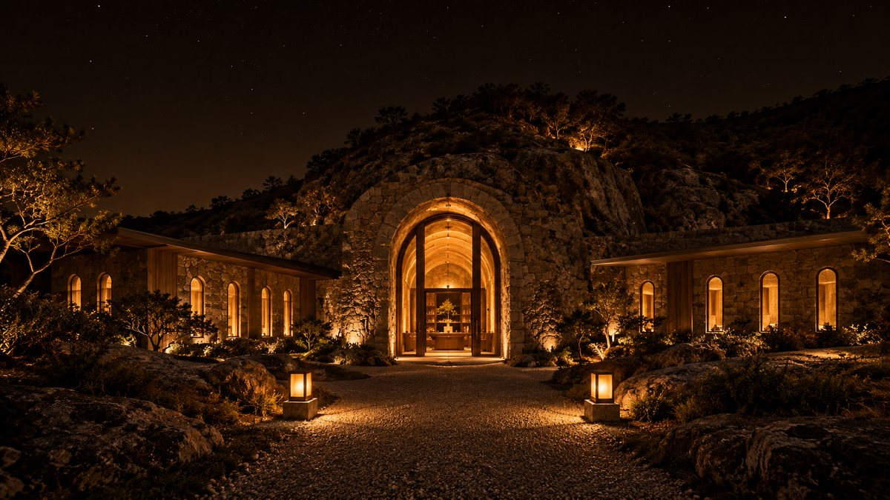
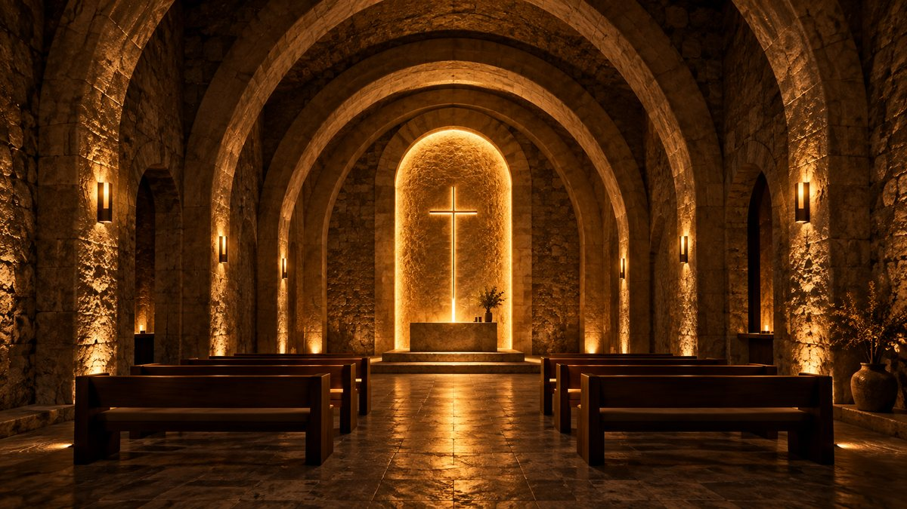

Under the Wilderness Ministry · In preparation
Please pray for ground
that has not yet been found
A dwelling where Christian business leaders walking through the wilderness can rest, learn from that rest, and rise again. No site and no date have been set. So we ask first for prayer.
The name
The name already says everything
Adullam is a refuge and scholē is learning. Together the two words describe exactly what this center intends to do.
become distress?
by what you owe?
bitter?
Four hundred men came to Adullam in exactly that condition, and they became David's mighty men.
ADULLAM
A hiding place that became a stronghold
The Adullam of 1 Samuel 22 is the rock cave where David hid while being hunted. Everyone in distress, everyone in debt and everyone bitter in soul gathered to him, and those four hundred men later became the warriors who built a kingdom.
In the same passage David also calls this place a stronghold. To the hunted it was a refuge; to the commander it was a fortress. It is one of very few places that first received people who were breaking, and then sent them back out rebuilt.
And everyone who was in distress, and everyone who was in debt, and everyone who was bitter in soul, gathered to him. And he became commander over them. And there were with him about four hundred men. 1 Samuel 22:2
SCHOLĒ
Rest that grew into a school
The Greek word scholē originally meant leisure and rest. It passed through the Latin schola and became the English word school. The fact that rest is the mother of learning is still buried in the root of the word.
So this center does not begin with teaching. An exhausted person has no vessel to receive it. We let people rest first and teach them afterward. The order itself is the philosophy.
Enter exhausted,
leave a warrior
Curriculum
Built on five axes
Biblical, theological and humanistic lenses open up wisdom and insight. To these we add practical skill and the footsteps of those who actually lived this way.
What Scripture says about work, money and people
Why it is so. Vocation and the theology of rest
What a human being is. What the classics answered
What you actually do on Monday morning
Whether anyone truly lived this way in business
The path
Enter through refuge,
leave through the stronghold
Five stages, each keeping its Hebrew name. Rest comes before learning, because an exhausted person has no vessel to receive it.
Assessment and a first conversation. You face where you actually stand.
1 dayA retreat with no lectures. Only rest, silence and recovery.
2 daysThe five axes in full. We gather over breakfast or supper.
12 weeksWe walk the actual places where Christian business leaders lived.
2 daysOne year of close accompaniment after completion. No one walks alone.
12 monthsThree tracks
Leaders, emerging leaders
and those who help them
Active Christian business leaders
Judgment, calling and organization. The full passage through all five axes.
12 weeks · 2 retreats · 1 year of accompaniment
Future leaders and founders
Weighted toward foundations and practical skill. Shares some sessions with the Main Track.
8 weeks · 1 retreat
Pastors and professionals
How to understand and help business leaders, and how to meet a congregant's business life.
4 weeks intensive
The week-by-week structure, the five practical skill modules, seven case studies of Christian business leaders and the retreat daily rhythm are all set out separately.
The center
This is the dwelling we picture
Space to learn, space to rest and space to pray must sit together for this curriculum to work. Below are renderings of what we hope to build.



No site has been secured yet. These are not photographs of an existing building but renderings of what we hope to build.
Six prayer requests
Please pray for the building
of Adullam Scholē
The ground, the date and the people are all still unfilled. We bring six requests and ask you to carry them with us.
A dwelling is not something people build,
but a prepared place we are led to.
Add your name as a prayer partner
We will not ask for your prayers and then leave it there. If you give us your name, we promise three things.
- A progress update once each quarter
- New prayer requests passed on as soon as they arise
- The opening announced to you first
Steward of the founding committee
Prepared over many years
of prayer
This center has been drawn from three vantage points at once: business, the humanities and theology.
- DegreePh.D. in Business Administration
- ResearchResearch Professor, Institute for Industrial Policy Studies
- TeachingAdjunct Professor
- Practice28 years in management, M&A, tax and venture advisory
- BooksThree published works on persuasion and communication
The title here is steward, not director. It is too early to place a director over something not yet built, and what this stage needs is not someone standing in front but someone keeping the place.
Join us
Three ways to walk with us
The ground is not yet found, so what is needed now is not funding but prayer and people.
Carry the six requests with us. In the end, this is the place where the center will have begun.
Become a prayer partnerJoin the founding committee, or share the skill, the time or the place you hold. If you know of suitable land, we would be glad to hear from you.
Ask about joiningIf you would one day like to rest and learn here, leave your name now. You will hear about the opening first.
Register early interestContact
We would be glad to hear from you
Any question about the building, about walking with us, or about taking part.
- Phone
- +82 1644-5086
- briany0527@naver.com
- Web
- adullami.com